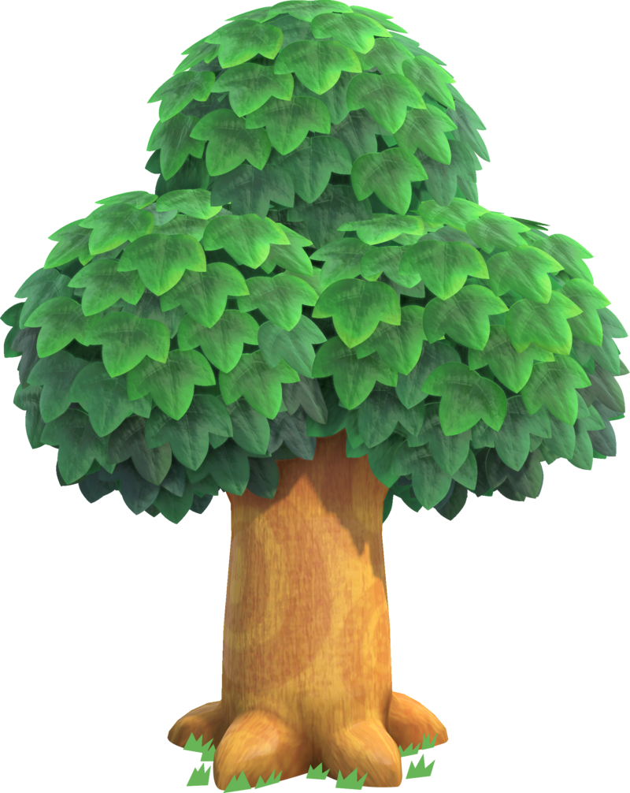

25:00

Features
Focus Sessions
Use a 25-minute study session layout based on the Pomodoro technique to stay committed to a specific amount of time
Plant Growth Motivation
Every completed study cycle contributes to the growth of your virtual plants, allowing you to see progress in real time
Plant Gallery
Unlock new plants over time and start to build a collection
Progress Tracking
The design of this app encourages you to come back regularly and see your progress